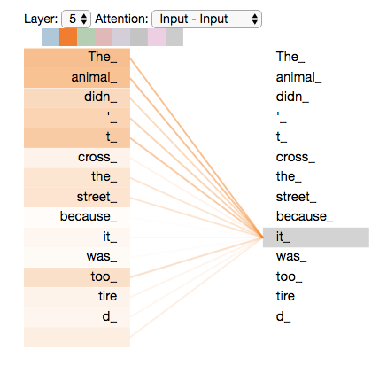
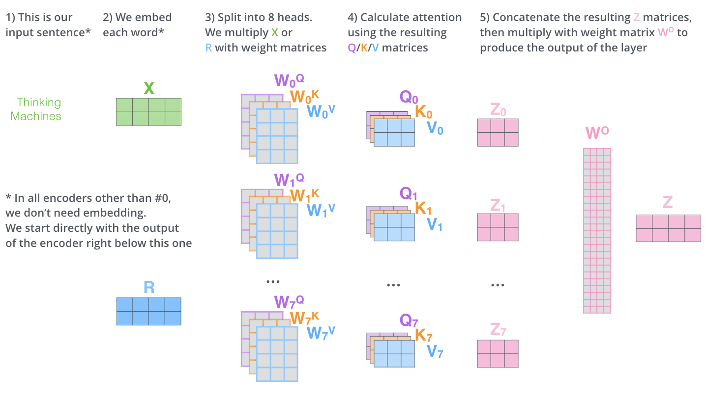
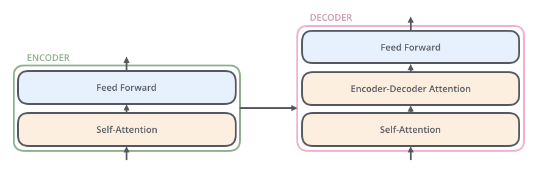
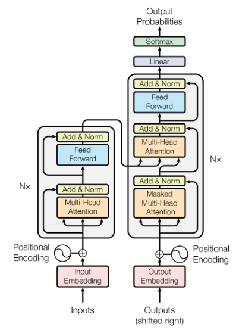

B,T,C = 4,8,32 # batch, time, channels
# input
x = torch.randn(B,T,C)
# let's see a single Head perform self-attention
head_size = 16
# create Q, K, V layers
key = nn.Linear(C, head_size, bias=False)
query = nn.Linear(C, head_size, bias=False)
value = nn.Linear(C, head_size, bias=False)
# compute the Q, K vectors for each word
k = key(x) # (B, T, 16)
q = query(x) # (B, T, 16)
# compute the weights using Q & K
wei = q @ k.transpose(-2, -1) # (B, T, 16) @ (B, 16, T) ---> (B, T, T)
# softmax+normalize the weights matrix
# tril = torch.tril(torch.ones(T, T))
# wei = wei.masked_fill(tril == 0, float('-inf')) # this line is for a decoder block
wei = F.softmax(wei, dim=-1)
v = value(x)
out = wei @ v
#out = wei @ x
out.shapeUnderstanding the Transformer
deep-learning
nlp
The phenomenon of our age is quite simple at its heart!
Transformers - the Phenomenon of Our Age
It is not hyperbolic to call transformers as the greatest invention in last 5 years or so. With ChatGPT and Bing AI, the quality of machine generated text has shattered everyone’s projections about artificial intelligence. However, what’s fascinating that the underlying architecture that has enabled all these advancements in NLP is relatively quite simple and easy to understand. In this post, we’ll try to understand it.
Contents of this Post: A brief comparison of transformers and sequential models, importance of attention, Q-K-V in simpler terms, and in detail, other components of transformers, decoder, beam-search.
Attention vs Sequential Models
Many people do have an understanding of RNNs / LSTMs, probably since they’ve been around for a long time, they’re a part of many a coursework, etc. And hence they try to understand transformers from that angle, as sort of a natural evolution. However transformers are extremely different from sequential models because they, well, are not sequential models.
In sequential models, we have units one after another, in a chain. Each unit/word has direct access to information of only the preceding unit/word. This is limiting - dependencies between words at different positions is not modelled well. For sequence-to-sequence prediction, the entirety of input is encoded in a single vector, and the decoder is supposed to decode everything from that. This causes information loss because all of it is crushed into a single vector. Transformer solves both of these issues and more.
For a silly comparison think of sequential models as the assassination chain meme, whereas an attention model as the mexican standoff meme. In attention, the mexican standoff has mutant people with dozens of arms pointing at everybody!
Self-Attention Is Translation Invariant
Self-Attention is translation invariant by nature, which means even if you exchange few words, the output will be same. To incorporate the position information, we have a separate embedding called position embedding that we’ll look at later. But in itself, self-attention does not have a “sequence” among the input words. This is really powerful since - it allows each word in a sentence to be considered for computing output - it allows us to parallelize operations on GPUs, enabling us to build larger powerful models.
Why Attention is Important
Attention is the underlying mechanism that powers transformers. Let us see why it is necessary. Take this sentence as example
The animal didn't cross the street because it was too tired
What does the word “it” refer to? We know that it refers to “animal”, but the model should also be able to connect to the relevant word and use that information while predicting. Self-Attention allows this. Here, the attention weights visualized indeed show us that.

A Single Dense Layer vs Attention
Now let’s understand a simpler situation that’s kinda analogous to self-attention- you simply multiply the inputs with a matrix (in other words, pass through a linear layer).
Let’s say the input sequence is of 8 words, and the vocabulary is of 1000. Then, we will first map each word to a embedding vector of 32, which is going to be our embedding dimension. This is like the word embedding of each word. Here, T = 8, and C = 32. Hence, our input is a matrix of [8 x 1000], which will be projected to [8 x 32].
Assume that W is our weights matrix of size TxT. Each element of it is a weight that corresponds to every single word to every other word, including towards itself (the diagonal elements). We can simply multiply it with our embedding matrix like this → [T, T] x [T, 32] → [T, 32], this being our updated representation!
Viola, we have an updated representation that considers every single word for computing output! BUT this is NOT attention, because in this case the weights are fixed. What we saw here is
\(y = A \cdot x\)
whereas attention is something like
\(y = A(x) \cdot x\)
where the weights matrix changes depending on what the input words are! In this example, the weights are fixed, attention is simply this example but with dynamic weights. How do we implement such dynamic weights? We use the Q-K-V method.
Q-K-V in Simple Terms
There are three matrices Q, K, V. By multiplying them with our word embeddings, for each word we get three vectors q, k, v. Each word’s q & k are used to create the weights matrix, which is multiplied with v to get the attention output for that word. Finally, v is passed through a linear layer to get the output of the single transformer block.
Think of an analogue where instead of words, we have six people - you, your grandma, your dog, your professor, your best friend, a random person. The first person, which is you, wants some advice (say, college admission). Here, query is a vector from you (what do I do?). All other people return keys to you (here’s what I say), and you compute a weights vector corresponding to your query and the keys. Finally you weigh the final decision (objectively, here’s the answer) based on these weights. Other people will similarly have their own questions. Not a perfect example, but good enough to get you started.
Q-K-V Matrices
Doing the q-k-v computation for each word will be extremely inefficient - we can use matrix multiplication to speedrun them.
Start with an Embedding for Each Word
We have T words as input, since that’s our time dimension/context size. Our total vocabulary is of size V. Hence our input is [T, V], each vector as a one-hot vector for that word.
Using a linear layer, we’ll project this vector [T, V] to [T, C]. Here, C is called our embedding dimension. This matrix [T, C] will go inside a transformer block.
Get the Q, K, V vectors for All Words
We define three matrices \(W_q\), \(W_k\), \(W_v\), each of size [C, 16]. Here, 16 is called the head size denoted by \(d\), and is smaller than embedding dimension by choice. Reminder - C is the embedding dimension, this size of vector is going to come in for each word, and be output for each word. In previous example, we had defined C=32. It can be 512 (USE) or 768 (BERT) or 12268 (in case of GPT)
To get the query vectors for all words simply multiply the embedding matrix by \(W_q\).
\(q = E \cdot W_q\) which in matrix form → [T, C] x [C, 16] → [T, 16]. Likewise for key and value vectors.
\(k = E \cdot W_k\) which in matrix form → [T, C] x [C, 16] → [T, 16]
\(v = E \cdot W_v\) which in matrix form → [T, C] x [C, 16] → [T, 16]
Compute the ‘Weights’ from Q, K and Multiply Them with V
To compute the final representation after attention, First multiply q and k vectors to get the weights matrix, but you will have to transpose k first to multiply them.
\(w = (q \cdot k^T)\), In matrix shapes, that is: [T, 16] x [16, T] → [T, T]
You apply softmax multiply these weights with the v vector to get your attention output
\(output = softmax(w) \cdot v\)
In matrix shapes that is [T, T] x [T, 16] → [T, 16]
Putting all together:
\(attention(q, k, v) = (\frac{1}{\sqrt{d_k}})softmax(q \cdot k^T) \cdot v\)
The \(\sqrt{d_k}\) division is to normalize the outputs.
Finally, Send This to a Dense Layer
After self-attention, the output is then again sent to one dense layer, which will allow the model to think deeper about the computed representations after the attention. Output of this layer is then given as input to the next transformer block- repeated n times till defined. This layer is called Feed-Forward Neural Network or FFNN.
[T, 16] → [T, 32]
This output now becomes input to the next encoder block.

In case the computation is easier to understand in code, here’s some pytorch code from Andrej Karpathy’s video:
Transformer Components
With self-attention out of the way, let’s move on to the entire transformer tower.
Types of Transformers
There can two be components - Encoder, and a Decoder. This is a sequence-to-sequence model, used for tasks like machine translation (which was the topic of intereset of the original transformer paper). However, there can be encoder-only transformers geared towards text understanding and applications like sentiment analysis, named entity recognition, etc. BERT is an example of encoder-model. There can also be decoder-only models like GPT which are geared towards production of text given a small input.
Components
Encoding component is actually six encoders, stacked on top of each other. They have the same structure, but they do not share weights. Each encoder has two parts - Self-Attention and Feed-Forward Neural Network. The FFNN weights are same for all words, for a given encoder.
Decoding Component too has these two components, but an extra one in the middle - Encoder-Decoder attention to focus on the encodings. For an encoder-decoder attention block, the K&V matrices come from the last encoder block, while Q matrices come from itself.

Multi-Headed Attention
We discussed self-attention, however skipped an important aspect of transformers that is multi-headed attention.
Let’s go back to the same example. The word it is correctly identified by the attention outputs to be related to animal. But there can be multiple contact points of information and interaction in the same sentence! For example the word tired is also related to animal but this relationship is not capture in one self-attention.
This can be remedied by having multiple attention heads! This means that for a single transformer block, we’ll have multiple sets of Q, K, V matrices instead of one. And before passing to the Feed Forward Neural Network, we’ll concatenate their outputs to aggregate their information.
This helps us capture multi-tiered information, like shown in this example:

Position Embeddings
So far in self-attention, we have not considered the order or the arrangement of the words in the sentence at all. The model simply looks around for attention irrespective of the query’s position. However positional information is important (obviously), so it needs to be incorporated somehow.
We create one more embedding of size [T, C]. Here, T is the number of words in a sentence, and C is the embedding dimension of the words. We simply add this embedding to the word / token embedding before computing the attention.
Residual Connections and LayerNorm
Another component in the transformer architecture is the residual connections and Layer Norm.
Layer Norm is different from Batch Normalization, in that latter normalizes using the properties of the entire batch, whereas former normalizes using the properties of the embedding dimension.
After adding all these components, we are able to see the diagram from the paper

Decoder
The decoder components are exactly the same as encoders - except for one change. Between self-attention and FFN, there’s an additional component called cross-attention. In this attention stage, the K and V matrices come from the encoder, while the Q matrices come from the decoder itself. This helps to aggregate the encoded information while decoding the sequence.
There’s one more difference with Decoder- while computing the attention, the future words are not attended to. That is, while decoding the first word, you cannot get any information from rest of the words. For first two words, no info from the third and onwards. This is implemented using by masking the weights matrix using a lower triangular matrix.
Decoders, like Encoders, are also stacked one above the another, and the outputs keep bubbling up till the last decoder layer. After that, there’s a linear layer that transforms the embeddings into probabilities across the entire vocabulary. Assume the model’s vocabulary is 10,000. Then for each output word there will be 10,000 probabilities. You can pick the highest probability and call it as your result, and discard the rest. This is called greedy search.
Beam-Search
You can pick the highest probability and call it as your result, and discard the rest. This is called greedy search.
Or, for the first word, you can keep the top two words, “I” and “He”. For the next word, you can run the model twice - one assuming the first word “I” was correct, and the second time assuming “He” was correct. Whichever produced less error considering the two words predicted, is kept. This is called beam search. In our case, beam size was 2- it can be bigger.
Links
This was an overview of the transformer architecture. A lot of the things here are from either Jay Alammar’s incredibly beautiful blogpost on transformers, or from Andrej Karpathy 2-hour video on implementing GPT from scratch. Both are fantastic resources, do check them out as well. And of course, the original “Attention” paper